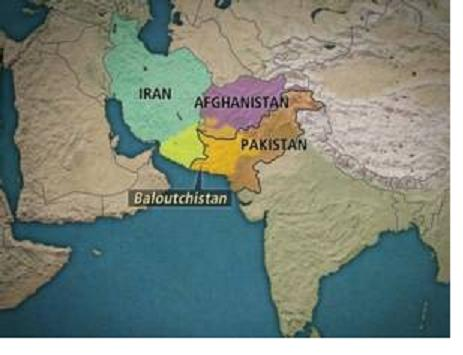

Năm 327 trước Công nguyên, Đại đế Hi Lạp Alexandre mới chiếm xong Ba Tư, xua quân qua đèo Hindoukouch tiến vô Ấn Độ. Trong một năm ông xông pha trong các tiểu quốc trù phú ở Tây Bắc, trước kia thuộc đế quốc Ba Tư, tới đâu cũng bắt dân chúng cung cấp lương thực cho đại quân của ông và đóng thuế cho ông. Đầu năm -326, ông vượt sông Indus, vừa đánh vừa tiến từ từ xuống phương Nam và phương Đông, qua các xứ Taxila và Rawalpindi. Ông gặp và đánh tan đạo quân của vua Porus gồm 30.000 bộ binh, 4.000 kị binh, 300 chiến xa và 200 thớt voi, giết 12.000 quân của Porus. Porus đã anh dũng chiến đấu tới cùng, cho nên khi ông ta đầu hàng, Alexandre vừa phục sự can đảm, vừa khen vóc dáng to lớn, tướng mạo đường đường lẫm liệt của ông, hỏi ông muốn được đối xử ra sao. Vua Porus đáp: “Alexandre, ông nên đãi tôi vào hàng quân vương”. Alexandre đáp: “Đành rồi, đó là chuyện của tôi, nhưng ông cho tôi biết ông muốn gì hơn cả”. Porus bảo Alexandre hỏi như vậy là đủ cho mình mãn nguyện rồi, không đòi gì nữa. Lời đáp đó làm cho Alexandre thích chí, và Alexandre cho Porus làm vua trọn phần Ấn Độ mà ông mới chiếm được. Từ đó, Porus phải lệ thuộc xứ Macédoine (tổ quốc của Alexandre) nhưng là đồng minh trung tín và cương nghị. Alexandre muốn tới biển đông – tức vịnh Bengale – nhưng quân sĩ không chịu tiến thêm nữa. Thuyết phục rồi giận dỗi cũng vô hiệu, ông đành phải nhượng bộ, kéo đoàn quân kiệt quệ trở về, mới đầu dọc theo bờ sông Hydaspe rồi theo bờ biển, ngược lên Gédrosie và Béloutchistan. Trong cuộc lui binh đó, ông qua nhiều miền có những bộ lạc bất qui phục và gần như ngày nào quân đội của ông cũng phải chiến đấu. Sau hai mươi tháng rút quân như vậy, trở về tới Suse thì đạo quân ông xua vào Ấn Độ ba năm trước, nay xơ xác, thiểu não.
Bảy năm sau Macédoine không còn giữ được chút quyền hành gì ở Ấn Độ nữa. Sở dĩ có sự thay đổi hoàn toàn đó là nhờ hoạt động của một nhân vật lãng mạn nhất trong lịch sử Ấn Độ, tài cầm quân kém Alexandre – dĩ nhiên – nhưng tài nội trị và ngoại giao thì vượt xa Alexandre: Chandragupta, vốn là một thanh niên quí tộc Kshatriya, bị quốc vương Nanda, có họ hàng với chàng, đày ra khỏi Magadha. Được Kautilya Chanakya, một người quỉ quyệt, giàu thủ đoạn, làm cố vấn, chàng tổ chức một đạo quân nhỏ, dẹp được hết các đồn quân Macédoine và tuyên bố Ấn Độ độc lập. Rồi chàng tiến về Pataliputra[1] kinh đô vương quốc Magadha, gây một cuộc cách mạng, chiếm ngôi báu và sáng lập triều đại Mauryan, triều đại này làm chủ Hindoustan và A Phú Hãn trong một trăm ba mươi bảy năm. Vừa can đảm vừa biết dùng mánh khoé khôn khéo của Kautilya, Chandragupta làm cho triều đại của ông thành mạnh nhất thời đó. Khi Mégasthènes, với tư cách là sứ thần của Seleucus Nicator, vua Syrie, tới kinh đô Pataliputra, ông ngạc nhiên thấy một nền văn minh mà ông ta về khoe với các người Hi Lạp ngây thơ rằng không kém nền văn minh Hi Lạp chút nào – ta nên nhớ văn minh Hi Lạp thời đó toàn thịnh.
Mégasthènes đã lưu lại nhiều trang ca tụng đời sống ở Ấn đương thời, có lẽ ông ta hơi tô điểm một chút. Trước hết ông lấy làm lạ rằng Ấn không có chế độ nô lệ[2], và dân chúng chia làm nhiều tập cấp tuỳ theo nghề nghiệp, ông cho sự phân chia xã hội như vậy rất tự nhiên, hợp lí, chấp nhận được. Vị sứ thần đó bảo dân chúng sống sung sướng.
Vì cách thức họ bình dị mà đời sống của họ đạm bạc. Không khi nào họ uống rượu, trừ trong các buổi lễ tế thần… Luật pháp và cách lập khế ước của họ rất giản dị, chứng cớ là gần như không bao giờ họ ra toà. Họ không kiện cáo nhau vì các tờ hợp đồng hoặc vì cho vay mượn, họ không cần dùng con dấu hoặc người làm chứng vì họ tin nhau… Họ trọng đạo đức và tính thành thực… Đa số đất đai đều cày cấy, mỗi năm hai mùa… Vì vậy người ta bảo Ấn Độ chưa hề biết nạn đói kém, chưa bao giờ thiếu thức ăn cho dân chúng.
Thời Chandragupta, Bắc Ấn có khoảng hai ngàn thị trấn, và thị trấn cổ nhất là Taxila, cách thị trấn Rawalpindi hiện nay khoảng ba chục cây số về phía Bắc. Arrien bảo thị trấn đó “lớn và thịnh vượng”, Strabon bảo nó rộng và có nhiều luật lệ rất tốt. Nó vừa là một quân khu vừa là một đất văn vật vì nó có một địa vị rất quan trọng về phương diện chiến lược, ở trên con đường chính đưa sang Tây Á, mà lại có trường đại học lớn nhất đương thời Ấn Độ. Sinh viên mọi nơi đổ xô lại Taxila cũng như thời Trung Cổ họ đổ xô lại Paris, ở đó có những giáo sư giỏi nhất dạy đủ các môn nghệ thuật và khoa học, trường Y khoa Taxila nổi danh khắp phương Đông[3].
Mégasthènes đã tả Pataliputra, kinh đô của Chandragupta như sau: kinh đô dài khoảng mười lăm cây số, rộng ba cây số, cung điện nhà vua tuy cất bằng cây nhưng Mégasthènes cho là đẹp hơn các cung điện ở Suse và Ecbatane, và chỉ kém các cung điện Persépalis thôi. Cột đều bọc một lớp vàng, vẽ những hình chim và lá cây, trong cung bày những đồ đạc vàng son rực rỡ. Nền văn minh đó vẫn có chút vẻ khoe khoang đặc biệt của phương Đông, chứng cớ là có những bình lớn bằng vàng trực kính một thước tám mươi; một sử gia Anh sau khi nghiên cứu các tài liệu văn học hoặc hội hoạ, các cổ vật còn lại, kết luận rằng thế kỉ thứ IV và thứ III trước Công nguyên, nghệ thuật và kĩ nghệ của đế quốc Maurya không kém nghệ thuật và kĩ nghệ dưới thời các vua Mông Cổ mười tám thế kỉ sau.
Chandragupta dùng võ lực chiếm được ngôi rồi, sống trong cảnh vàng son rực rỡ của cung điện hai mươi bốn năm, chỉ đôi khi mới ra ngoài thành tiếp xúc với dân chúng, những lúc đó, bận bộ triều phục bằng lụa là thêu kim tuyến, ngồi trong một chiếc kiệu bằng vàng hoặc cưỡi một thớt tượng trang sức lộng lẫy. Trừ những buổi đi săn hoặc tiêu khiển, còn thì ông dùng hết thì giờ vào việc cai trị một quốc gia đương phát triển mạnh. Mỗi ngày của ông chia làm mười sáu khoảng, mỗi khoảng chín mươi phút. Khoảng thứ nhất, ông thức dậy, trầm tư, khoảng thứ nhì ông đọc các bản điều trần của các đại thần rồi ban các mật lệnh, khoảng thứ ba ông họp với các nhà cố vấn trong một điện riêng, khoảng thứ tư, lo về vấn đề tài chính và binh bị, khoảng thứ năm, đọc các sớ thỉnh cầu của dân và xử án, khoảng thứ sáu dùng để tắm và ăn, khoảng thứ bảy thu thuế và các cống phẩm, bổ dụng quan lại, khoảng thứ tám lại họp nội các, nghe các lời báo cáo của bọn mật vụ và bọn triều thần cũng do thám cho ông, khoảng thứ chín dùng để nghỉ ngơi, tụng niệm, khoảng thứ mười và mười một dùng để giải quyết các vấn đề võ bị, khoảng thứ mười hai cũng nghe báo cáo mật, khoảng thứ mười ba để tắm và ăn bữa tối, ba khoảng cuối cùng, mười bốn, mười lăm và mười sáu để ngủ. Sự thực không chắc đã đúng như vậy, có lẽ đó chỉ là chương trình lí tưởng mà sử gia mong cho Chandragupta theo được hoặc muốn cho dân chúng tưởng rằng Chandragupta theo được. Các tin tức trong cung điện đưa ra ít khi đúng sự thật lắm.
Sự thực mọi quyền hành do viên đại thần quỉ quyệt Kautilya nắm hết. Kautilya vốn là một tu sĩ Bà La Môn, biết rõ giá trị của tôn giáo về phương diện chính trị, nhưng trong cách hành động lại không theo các qui tắc đạo đức, như các nhà độc tài hiện thời, ông ta cho rằng phương tiện nào cũng tốt miễn là có lợi cho quốc gia. Con người đó vô sở bất vi, tráo trở, nhưng rất trung tín với vua, ông ta hầu hạ Chandragupta trong cảnh lưu đày, trong cơn thất bại, trong thời mạo hiểm, bày mưu lập kế cho chủ để giết người, thắng trận, và nhờ thủ đoạn khôn khéo, làm cho đế quốc của chủ hoá mạnh nhất Ấn Độ thời đó, các thời trước cũng không bằng. Như Machiavel ở Ý thời Trung cổ, tác giả cuốn Prince, Kautilya nghĩ nên chép lại những thuật ông ta dùng trong chiến tranh và ngoại giao, theo truyền thuyết ông ta là tác giả cuốn Arthshastra, cuốn sách cổ nhất viết bằng tiếng Sancrit. Bảng liệt kê các cách ông đề nghị để chiếm một đồn đủ cho ta thấy óc thực tế của ông “tế nhị” ra sao. Các cách đó là “gian kế, dùng gián điệp, hối lộ bên địch, bao vây, xung phong”. Rõ ràng là ông ta muốn phí ít sức nhất. Cách trị dân của Chandragupta và viên tể tướng của ông không có tính cách dân chủ, nhưng triều đại đó vẫn là triều đại tốt nhất, vô tiền khoáng hậu trong lịch sử Ấn Độ. Akba, minh quân bậc nhứt của Mông Cổ “không so sánh được với Chandragupta và người ta có thể tin rằng không một thành thị Hi Lạp nào thời cổ được tổ chức khéo hơn”. Chính quyền rõ ràng là dựa trên sức mạnh của quân đội. Nếu lời của Mégasthènes đáng tin (nhưng có lẽ lời của ông cũng đáng ngờ như lời các phóng viên báo chí ngày nay ở ngoại quốc) thì Chandragupta có một đạo quân gồm 600.000 bộ binh, 30.000 kị binh, 9.000 thớt voi, và một số chiến xa không biết rõ là bao nhiêu. Nông dân và tu sĩ Bà La Môn được miễn dịch, Strabon bảo nông dân được yên ổn cày ruộng trong thời chiến. Theo nguyên tắc, quyền của nhà vua không bị hạn chế, nhưng sự thực một phần quyền hành thuộc về một hội đồng – có khi do nhà vua chủ toạ, có khi không – nhiệm vụ là thảo luật, quyết đoán về tài chánh, lo việc ngoại giao và bổ nhiệm cả vài chức lớn trong triều đình. Mégasthènes nhấn mạnh vào “tư cách cao thượng và sáng suốt” của các vị cố vấn đó mà nhiệm vụ trong chính quyền thật là quan trọng.
Nội các gồm nhiều bộ có quyền hạn rõ rệt và một số công chức đủ các cấp: các bộ đó lo việc thu thuế, đánh thuế quan, cấp giấy thông hành, giải quyết các vấn đề biên giới, giao thông, thuế gián thu, mỏ, canh nông, mục súc, thương mại, lâm sản, thuyền bè, kho chứa hàng, xưởng đúc tiền, cả vấn đề du hí trong dân gian và mãi dâm nữa. Chẳng hạn viên tổng giám đốc thuế gián thu kiểm soát việc bán thuốc men, rượu, quyết định cho mở bao nhiêu quán rượu, ở đâu, mỗi quán được bán bao nhiêu rượu. Viên tổng giám đốc mỏ định chu vi khai thác cho những người được phép, những người này phải nộp một số thuế nhất định là bao nhiêu đó cho triều đình và nộp cho ông ta một số tính theo lợi tức, về canh nông cũng gần gần như vậy vì theo nguyên tắc, đất thuộc về quốc gia hết. Viên tổng giám đốc du hí kiểm soát các sòng bạc, cung cấp các con thò lò, các sòng phải nộp thuế mới được dùng các con thò lò đó, ngoài ra còn nộp cho quốc khố 5% số lời. Viên tổng giám đốc mãi dâm coi chừng các gái điếm, coi chừng sự chi tiêu của họ, bắt họ phải nộp mỗi tháng hai ngày tiền họ kiếm được, ông ta còn nuôi hai ả trong cung để họ “tiếp đãi” khách khứa của ông và cũng để làm gián điệp cho ông nữa. Làm nghề nào cũng phải đóng thuế, ngoài ra triều đình thỉnh thoảng quyên tiền của bọn phú gia nữa. Triều đình định giá cả các món hàng, cứ đúng kì hạn kiểm soát xem thước và cân có đúng cách thức không; lập các xưởng quốc gia để chế tạo một số hoá phẩm nào đó; chính quyền còn bán rau và giữ độc quyền về mỏ, muối, gỗ, tơ lụa, ngựa và voi.
Tại các làng, chính các hương trưởng hoặc các panchayat – hương hội gồm năm hương chức – lo việc xử kiện, tại các thành phố, quận hoặc tỉnh, có những toà án thuộc nhiều cấp; tại kinh đô, Nội các lãnh nhiệm vụ của tối cao pháp viện, và nếu cần thì nhà vua sẽ xử các vụ chống án cuối cùng. Hình phạt rất nghiêm khắc: chặt tay, chặt chân, khổ hình và tử hình, thường thường là quyết định theo luật báo thù hoặc luật bồi thường. Nhưng chính quyền không phải chỉ lo trừng trị tội ác, mà còn săn sóc đến vệ sinh, y tế, mở nhiều dưỡng đường, nhiều cơ quan từ thiện, gặp những năm đói kém thì lấy thóc gạo, thức ăn trong kho ra phát chẩn, bắt buộc người giàu bố thí cho kẻ nghèo, và những năm kinh tế khủng hoảng, tổ chức các đại công tác cho dân thất nghiệp có công ăn việc làm.
Bộ giao thông trên thuỷ qui định sự chuyên chở bằng đường thuỷ, che chở các hành khách đi trên sông hoặc trên biển; tu bổ các cầu, hải cảng, giang cảng, đặt những đò đưa qua sông chỗ nào tư nhân không lập sẵn bến – lối tổ chức nửa công nửa tư đó rất tốt, một mặt các tổ chức tư nhân không bóc lột dân chúng được vì còn có sự cạnh tranh của chính phủ, một mặt, nhờ có những tổ chức tư nhân mà các tổ chức chính phủ không phung phí quá vì không được độc quyền mà phải cạnh tranh. Bộ giao thông trên bộ đắp và sửa tất cả các đường trong nước, từ những hương lộ dùng cho xe bò, nối làng nọ với làng kia, tới những thương lộ (đường để giao thông buôn bán) rộng mười thước và vương lộ (tức như quốc lộ) rộng gần hai chục thước. Một trong những vương lộ đó dài gần hai ngàn cây số, đưa từ kinh đô Pataliputra tới biên giới Tây Bắc, nghĩa là bằng nửa đường băng ngang Hoa Kì từ Đông qua Tây. Mégasthènes bảo bên bờ lộ, cứ cách ngàn rưỡi thước lại cắm một cây trụ ghi hướng đi về đâu và khoảng đường còn bao xa. Cùng cách khoảng gần đều đều, người ta trồng cây có bóng mát bên lề đường, đào giếng, dựng các nhà trạm và các lữ điếm. Chuyên chở thì dùng xe bò, kiệu, xe trâu, ngựa, lạc đà, voi, lừa và phu phen. Đi bằng voi là cách thức sang nhất, chỉ hoàng tộc và các đại thần mới dùng, cách đó được dân rất ham mê và người ta cho rằng một con voi đáng quí hơn cái trinh tiết của đàn bà[4].
Việc hành chánh trong các thị trấn cũng tổ chức theo qui tắc phân phối các dịch vụ thành nhiều ti riêng biệt. Chẳng hạn kinh đô Pataliputra gồm một hội đồng gồm ba mươi nhân viên chia làm sáu ti. Một ti điều khiển kĩ nghệ, một ti lo về ngoại kiều, kiếm chỗ ở cho họ, hướng dẫn họ mà cũng dò xét sự di chuyển của họ, một ti giữ sổ sinh và sổ tử, một ti nữa cấp giấy phép cho thương nhân, qui định việc bán các sản phẩm tự nhiên, kiểm soát các đồ đo lường, một ti nữa kiểm soát việc bán hoá phẩm, một ti nữa đánh thuế 10% vào mọi việc giao dịch. Hawell bảo: “Tóm lại, ở thế kỉ thứ IV trước Công nguyên, Pataliputra có vẻ là một đô thị tổ chức và cai trị rất hoàn hảo theo những qui tắc tốt nhất của môn xã hội học”. Còn Vincent Smith thì khen: “Sự tuyệt hảo của các biện pháp đó đáng làm cho ta ngạc nhiên dù ta chỉ mới xét các đại cương mà thôi, nếu đi sâu vô chi tiết thì ta càng thán phục rằng ba trăm năm trước Công nguyên, làm sao Ấn Độ đã sáng lập và thực hành được một nền hành chánh như vậy”.
Chính quyền đó chỉ có mỗi một nhược điểm là chuyên chế, do đó luôn luôn phải dùng đến sức mạnh và mật vụ. Như mọi nhà cầm quyền chuyên chế, ngai vàng của vua Chandragupta rất lung lay, ông ta luôn luôn sợ một vụ nổi loạn, sợ bị ám sát. Đêm nào cũng phải đổi phòng ngủ, không dám ngủ hoài một phòng, và lúc nào cũng có vệ binh ở chung quanh. Theo truyền thuyết Ấn mà các sử gia châu Âu cho là đúng, có lần một nạn đói kém kéo dài quá (lời của Mégasthènes) làm cho nước điêu tàn, Chandragupta thất vọng vì bất lực, không cứu nổi dân, thoái vị, sống cuộc đời khổ hạnh như các tín đồ Jaïn trong mười hai năm nữa rồi tuyệt thực để chết. Voltaire bảo: “Đành rằng xét cho cùng thì đời sống của một gã đưa đò có phần sướng hơn đời sống của một vị đại-thống-lãnh, nhưng tôi nghĩ cũng chẳng khác nhau bao nhiêu, nên chẳng cần phải phí công bàn”.
Açoka – Sắc chỉ tự do tín ngưỡng – Các nhà truyền giáo của Açoka – Sự thất bại của ông – Sự thành công của ông
Bindusara, ông vua kế vị Chandragupta, chắc chắn là một người có cảm tình với giới trí thức. Vì người ta kể chuyện rằng ông ta xin Antiochus, vua Syrie, tặng ông ta một triết gia Hi Lạp; trong thư còn nói rõ rằng cần thứ triết gia Hi Lạp “chính hiệu”, giá cả bao nhiêu cũng không ngại. Đề nghị đó không có kết quả vì Antiochus kiếm đâu ra một triết gia để bán, nhưng Trời cũng không phụ lòng Bindusara, cho ông ta một người con trai triết nhân.

Bản đồ Béloutchistan
(http://media.artevod.com/4466_baloutchistan%2001.jpg)
Açoka Vardhana lên ngôi năm 273 trước Công nguyên, làm chủ một đế quốc rộng lớn nhất từ trước chưa hề có ở Ấn Độ vì đế quốc đó gồm A Phú Hãn, Béloutchistan[5], toàn thể Ấn Độ ngày nay trừ miền Tamilakam, tức xứ của người Tamil, ở phía cực Nam bán đảo. Trong một thời gian, ông ta cai trị y như ông nội ông, Chandragupta, nghĩa là tàn ác đấy, nhưng đàng hoàng. Nhà sư Huyền Trang ở Trung Hoa qua thỉnh kinh, sống ở Ấn Độ nhiều năm (thế kỉ thứ VII sau Công nguyên), chép rằng dân chúng còn nhớ khám đường Açoka cho xây cất ở phía Bắc kinh đô, mà truyền thuyết gọi là “Địa ngục của Açoka”. Dân Ấn kể cho Huyền Trang rằng Açoka dùng đủ các cực hình có thể tưởng tượng được để tra tấn, trừng trị tội nhân. Nhà vua lại còn ra lệnh kẻ nào đã vô trại giam đó thì đừng để cho ra mà còn sống. Nhưng một hôm một vị thánh tăng lớ vớ vô cớ bước vô, bị liệng vào vạc dầu mà không chết. Viên cai ngục bèn báo cho Açoka, Açoka tới tức thì, nhìn tận mắt, thấy hiện tượng đó kì dị, tính quay ra thì viên cai ngục tâu rằng theo lệnh của nhà vua, không một kẻ nào được ra khỏi ngục mà sống, như vậy mới tính làm sao bây giờ? Açoka nhận lời đó là đúng bèn bảo liệng chính viên cai ngục vào vạc dầu.
Người ta còn bảo khi về tới cung điện, Açoka đổi tính hẳn đi, ra lệnh phá khám đường và sửa lại hình luật cho nhân đạo hơn. Đúng lúc đó ông ta hay tin quân đội mới đại thắng bộ lạc nổi loạn Kalinga, giết được mấy ngàn quân phiến loạn và bắt được một số lớn nữa làm tù binh. Açoka hối hận “vì cảnh cảnh chém giết tàn nhẫn đó mà làm cho bao nhiêu tù binh phải xa người thân của họ”. Ông bèn bảo thả hết các tù binh, trả đất lại cho bộ lạc Kalinga, lại còn gởi họ một bức thư xin lỗi nữa. Thật là một hành động vô tiền trong lịch sử, mà cũng gần như khoáng hậu nữa, vì đời sau rất ít người bắt chước ông. Rồi ông ta xin qui y, bận áo vàng trong một thời gian, không đi săn, không ăn mặn nữa, và theo con đường Bát chánh. Ngày nay chúng ta khó mà biết được trong truyền thuyết đó phần nào hoang đường, phần nào đúng sự thực, chúng ta cũng không biết rõ được vì những lí do nào mà ông hành động như vậy. Có lẽ ông thấy đạo Phật đã phát triển mạnh, và nghĩ rằng những lời Phật dạy phải từ bi, yêu hoà bình có thể vừa ích lợi cho dân chúng lại giúp ông giảm được số cảnh sát, mật vụ đi chăng? Dù sao thì trong năm thứ mười một triều đại của ông, một loạt sắc lệnh được ban bố mà ai cũng nhận là những sáng kiến kì dị nhất chưa chính quyền nào nghĩ ra; ông lại đục khắc lên núi đá, lên cột các sắc lệnh đó viết theo thổ ngữ từng miền để bất kì người Ấn nào biết chữ cũng có thể đọc được. Người ta thấy nhiều sắc lệnh khắc trên núi đá ở nhiều nơi tại Ấn Độ, ngày nay mười cây cột lớn còn đứng vững và có thể định được vị trí của hai chục cây cột khác. Những sắc lệnh đó tỏ rằng nhà vua đã hoàn toàn tin lời dạy của đạo Phật và rán áp dụng nó vào việc trị nước, nghĩa là vào khu vực hoạt động khó đem nó ra thực hành nhất. Cũng như thể một quốc gia hiện đại (ở Tây Phương) nhất đán tuyên bố rằng sẽ đem đạo Ki Tô ra thực hành.
Những sắc lệnh đó rõ ràng chịu ảnh hưởng của Phật giáo, nhưng hình như không có khuynh hướng tôn giáo. Trong các sắc lệnh có chỗ nói tới một đời sống vị lai đấy, và chỉ điểm đó cũng cho ta thấy rằng tư tưởng, tín ngưỡng của Phật tử đã khác xa chủ trương hoài nghi của Phật Tổ rồi. Nhưng không có đoạn nào trong các sắc lệnh bảo dân phải thờ phụng một vị thần nào cả, chẳng những vậy, ngay đến Phật, cũng không bắt dân thờ nữa. Rõ ràng là các sắc lệnh không quan tâm tới thần học: sắc lệnh ở Sarnath bảo phải giữ sự hoà thuận trong các đền chùa, tăng hội và kẻ nào đề xướng sự li giáo làm cho tăng hội suy nhược thì sẽ bị tội; nhưng nhiều sắc lệnh khác bảo phải khoan dung về phương diện tôn giáo, trọng sự tự do tín ngưỡng. Phải bố thí cho các tu sĩ Bà La Môn cũng như các tăng đồ, không được mạt sát tín ngưỡng của người khác. Nhà vua tuyên bố rằng tất cả các thần dân đều là con cưng của ngài chẳng cần biết người nào theo tôn giáo nào, đối đãi với mọi người như nhau cả. Sắc lệnh số XII, khắc trên tảng đá, có một giọng mà ta tưởng là giọng của thời đại chúng ta:
Hoàng Thượng Chí Từ Chí Linh chào hết thảy các thần dân trong mọi giáo phái, dù là hạng tu hành khổ hạnh (ở trong hang) hay là hạng tu tại gia.
Hoàng Thượng không cho những tặng vật và những lời chào hỏi bề ngoài là quan trọng bằng cái bản chất chủ yếu của mọi giáo phái. Cái chủ yếu đó có thể tấn bộ theo nhiều hình thức, nhưng điều căn bản là phải giữ gìn lời ăn tiếng nói; không nên vô cớ đề cao giáo phái của mình, chê bai giáo phái của người. Muốn chê bai thì phải có những lí do vững vàng vì tất cả các giáo phái khác đều có một khía cạnh nào đó đáng cho ta kính trọng.
Nếu giữ được như vậy thì vừa làm cho giáo phái của mình phấn khởi, vừa giúp được các giáo phái khác. Trái lại là làm hại giáo phái của mình và các giáo phái khác… Sự hoà thuận là điều đáng khen.
Cái “bản chất chủ yếu” đó đã được định nghĩa rõ hơn trong sắc lệnh người ta gọi là Sắc lệnh trên cột thứ nhì. “Đạo sùng kính là điều rất tốt, nhưng thế nào là sùng kính? Sùng kính là ít nghịch đạo, làm nhiều điều thiện, từ bi, khoan dung, thành thực và trong sạch”. Chẳng hạn Açoka ra lệnh cho các quan phải thương dân như con, dịu dàng kiên nhẫn với họ, không có lí do chắc chắn thì không được bắt giam, tra khảo họ; ông còn ra lệnh cứ đều đều đúng kì hạn phải đọc những chỉ thị đó trước công chúng cho mọi người biết.
Những sắc lệnh có tính cách khuyên răn đó có ảnh hưởng gì tới thái độ và ngôn hành của đại chúng không? Có lẽ nhờ những sắc lệnh đó mà giới luật ahimsa (không làm tổn thương sinh vật) được truyền bá rộng trong giới thượng lưu, họ ít ăn thịt, ít uống rượu hơn. Dĩ nhiên, Açoka, như mọi nhà cải cách chân chính, rất tin rằng những lời răn của mình khắc trên đá tất hiệu nghiệm; trong Sắc lệnh số IV khắc trên tảng đá, ông cho biết rằng ông đã gặt được những kết quả kì diệu và đoạn trần thuật dưới đây cho ta hiểu thêm giáo lí của ông:
Bây giờ do sự sùng đạo của Hoàng Thượng Chí Từ Chí Linh, tiếng vang của Đạo đã thay tiếng trống thúc quân… Một việc từ lâu đã không xảy ra, là ngày nay nhờ những cố gắng của Hoàng Thượng Chí Từ Chí Linh để truyền bá đạo, người ta nhận thấy số sinh vật bị hi sinh để tế thần mỗi ngày mỗi giảm hoài, số loài vật bị giết cũng giảm, dân chúng kính trọng cha mẹ và các tu sĩ Bà La Môn hơn, người ta nghe lời cha mẹ và ông già bà cả hơn. Cho nên có thể nói rằng về nhiều điểm, Đạo đã được tuân hành hơn, Hoàng Thượng Chí Từ Chí Linh sẽ gắng sức làm cho Đạo được tuân hành mỗi ngày mỗi nhiều hơn nữa.
Con, cháu của Hoàng Thượng Chí Từ Chí Linh sẽ gắng sức làm cho Đạo được tuân hành mỗi ngày mỗi nhiều hơn nữa, cho tới thời gian vô cùng.
Ông vua nhân từ đó quá tin lòng mộ đạo của con người và sự hiếu thuận của các con ông. Riêng phần ông, ông hăng say làm việc cho tôn giáo mới, tự xưng là Giáo chủ, tặng Tăng hội vô số tiền, cho xây cất 84.000 ngôi chùa và dựng ở khắp nơi trong nước nhiều dưỡng đường cho bệnh nhân, cả cho loài vật nữa. Ông phái các cao tăng đi truyền bá đạo Phật ở khắp Ấn Độ, Tích Lan, Syrie, Ai Cập, tới cả Hi Lạp nữa (có lẽ những cao tăng đó đã giúp cho dân chúng phương Tây sau này dễ chấp nhận luân lí Ki Tô), khi ông vừa mới mất thì nhiều phái đoàn khác đi truyền bá đạo Phật ở Tây Tạng, Trung Hoa, Mông Cổ và Nhật Bản[6]. Ngoài những hoạt động đó ra về tôn giáo, Açoka rất siêng năng trị nước, ông làm việc suốt ngày và ai cũng có thể vô yết kiến ông bất kì lúc nào để bàn về việc nước.
Tật lớn nhất của ông là sự tự cao tự đại, một nhà cải cách khó mà khiêm tốn được. Tật đó hiện rõ trong các sắc lệnh của ông và ông đáng là người anh tinh thần của Marc Aurèle[7]. Ông không biết rằng các tu sĩ Bà La Môn ghét ông và tìm mọi cách để hạ ông, cũng như các tu sĩ Thèbes (Ai Cập) đã hạ Ikhnaton ngàn năm trước. Không riêng các tu sĩ Bà La Môn bất bình, vì cấm giết sinh vật để cúng tế thì họ đâu còn được hưởng phần thịt nữa, mà các thợ săn, các người đánh cá cũng oán hận vì phải bỏ nghề nếu không thì có thể bị trừng trị nặng, ngay đến nông dân cũng bực tức vì luật “cấm đốt cỏ khô vì các sinh vật có thể có trong cỏ”. Thế là một nửa dân chúng chỉ mong cho Açoka chết phức đi.
Huyền Trang bảo rằng theo truyền thuyết Phật giáo, về già, Açoka bị cháu nội và quần thần truất ngôi. Họ rút lần các quyền hành của ông, và ông đành phải thôi, không tặng được gì cho Tăng hội nữa. Ngay cả về phần ăn người ta cũng rút xuống hoài, tới một ngày nọ chỉ cung cấp cho ông mỗi bữa nửa trái analaka. Nhà vua rầu rĩ nhìn phần ăn của mình rồi sai đem tặng cho các đạo huynh, có cái gì ông cũng đã tặng hết cho họ rồi. Nhưng sự thực chúng ta không biết chút gì về những năm cuối trong đời ông, cũng chẳng biết ông mất năm nào nữa. Chỉ một thế hệ là đế quốc của ông đủ tan rã như đế quốc của Ikhnaton (vua Ai Cập) thời trước. Đế quốc Magadha sở dĩ duy trì được là do truyền thống hơn là do sức mạnh, cho nên lần lần các tiểu quốc không chịu phục tòng “Vua của các vì vua” ở Pataliputra nữa. Dòng dõi Açoka vẫn còn làm vua Magadha cho tới thế kỉ thứ VII sau công nguyên nhưng triều đại Maurya do Chandragupta khai sáng đã tắt từ khi Brihadratha bị ám sát. Quốc gia mà mạnh là nhờ tư cách, tinh thần của con người chứ không nhờ lí tưởng.
Chúng ta có thể bảo rằng Açoka đã thất bại về phương diện chính trị, nhưng về phương diện khác ông đã thực hiện được một nhiệm vụ lớn nhất trong lịch sử. Trong khoảng hai trăm năm sau khi ông mất, đạo Phật lan tràn khắp Ấn Độ và bắt đầu xâm chiếm châu Á một cách hoà bình. Nếu, cho tới ngày nay, từ Kady ở đảo Tích Lan, tới Kamakura ở Nhật Bản, nét mặt an tĩnh của Đức Thích Ca còn gợi cho người ta khoan hồng với người đồng loại và yêu mến hoà bình, thì một phần là vì một người mơ mộng – có thể là một vị thánh, chưa biết chừng – đã có thời làm vua ở Ấn Độ.
[1] Nay là
[2] Arrien cũng ngạc nhiên rằng mọi người dân Ấn đều tự do, không có một người nào là nô lệ.
[3] Nhà khảo cổ John Marshall đã cho đào đất ở chỗ nền cũ thị trấn Taxila và tìm được nhiều phiến đá chạm trổ tất khéo, những bức tượng rất đẹp, những đồng tiền có từ 600 năm trước Công nguyên và những đồ thuỷ tinh mà sau này Ấn Độ không thời nào chế tạo khéo hơn được. Vincent Smith bảo: “Hiển nhiên Ấn Độ thời đó đã đạt một trình độ cao về văn minh vật chất vì chúng ta thấy ở đó có sản phẩm của đủ các nghệ thuật, các nghề nghiệp làm cho đời sống thêm phong nhã.
[4] Phụ nữ Ấn rất tiết hạnh, không chịu mất trinh tiết vì một nguyên do gì khác, nhưng nếu người đàn ông nào tặng họ một con voi thì khi họ nhận voi, họ chịu thất tiết với người đó để đáp lại. Đàn ông Ấn không cho cách thức mãi dâm đó là xấu, còn đàn bà Ấn thì lấy vậy làm vinh hạnh vì sắc đẹp của mình đáng giá một con voi: Theo Arrien trong cuốn Indica.
[5] Béloutchistan: còn gọi là Baloutchistan, gồm một phần miền đông của Iran, một phần là miền Tây của Pakistan và một phần là miền Nam của Afghanistan ngày nay (xem bản đồ ở trên). (Goldfish).
[6] Theo Wikipedia thì “Phật giáo được du nhập vào Việt Nam từ rất sớm, ngay từ đầu Công nguyên với truyện cổ tích Chử Đồng Tử (ở Hưng Yên ngày nay) học đạo của một nhà sư Ấn Độ. Luy Lâu (thuộc tỉnh Bắc Ninh) là trị sở của quận Giao Chỉ sớm trở thành trung tâm Phật giáo quan trọng. Các truyền thuyết về Thạch Quang Phật và Man Nương Phật Mẫu xuất hiện cùng với sự giảng đạo của Khâu Đà La (Ksudra) trong khoảng các năm 168-189”. (Goldfish).
[7] Hoàng đế và triết gia La Mã (121-181).